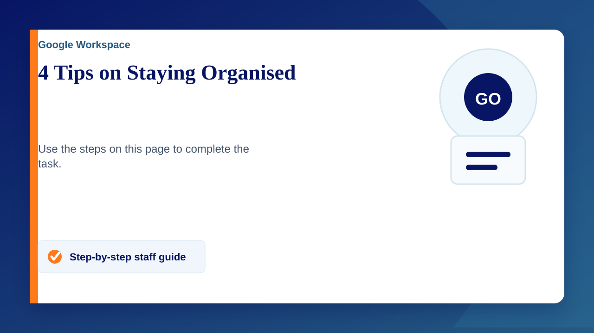

4 Simple Google Drive Tips to Stay Organised
1. Add Shortcuts Instead of Duplicating Files
- Why? Avoid clutter and version confusion.
- How? Right-click a file/folder → Add shortcut to Drive → Place it where you need it.
2. Declutter with an Archive Folder
- Why? Keep your main Drive clean by moving old files.
- How? Create an Archive folder and add subfolders like “2023” or “Completed Work.”
3. Star Files for Quick Access
- Why? Quickly find your most-used files.
- How? Right-click a file/folder → Add to Starred. Access them in the Starred tab.
4. Use Colour Coding for Folders
- Why? Spot important folders at a glance.
- How? Right-click a folder → Change colour → Pick a colour.
These small changes can save you time and keep your Drive tidy. Try them out, and let us know if you have any questions!